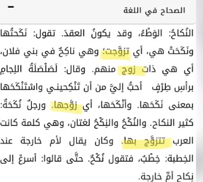
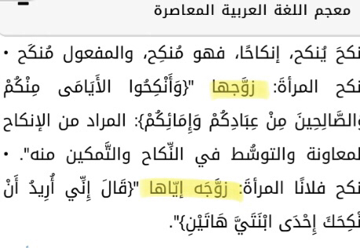
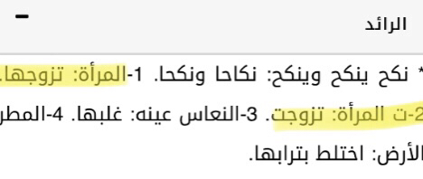
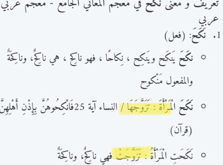
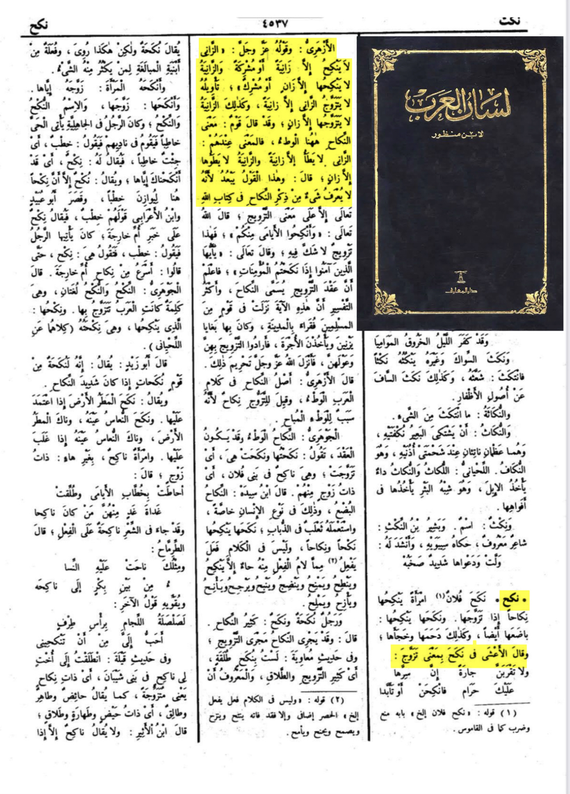

The problem is that he doesn’t have any knowledge from certainly any point of the language
We will start off by the Quran the origin of Arabic language itself
يَـٰٓأَيُّهَا ٱلَّذِينَ ءَامَنُوٓا۟ إِذَا نَكَحْتُمُ ٱلْمُؤْمِنَـٰتِ ثُمَّ طَلَّقْتُمُوهُنَّ مِن قَبْلِ أَن تَمَسُّوهُنَّ فَمَا لَكُمْ عَلَيْهِنَّ مِنْ عِدَّةٍ تَعْتَدُّونَهَا ۖ فَمَتِّعُوهُنَّ وَسَرِّحُوهُنَّ سَرَاحًا جَمِيلًا
O believers! If you marry believing women and then divorce them before you touch them,1 they will have no waiting period for you to count,2 so give them a ˹suitable˺ compensation, and let them go graciously.
Quran 33:49
The verse says iza nakuhtum believing women before touching them it become apparent that it isn’t the act that has been addressed here
Now to the Arabic language itself
Translation: “nikah means marriage”
-Source: Al mu’jam Al-wajiz page 6333
Also here are other sources saying the same thing from Almaany.com all reliable




Now the word could mean seggs but has it ever been in the Quran
In lisan al-arab by ibn manzur print of darul maarif page number 4537 on the work « nakh » al-azhary lists some Qūr’ānīc passages with the word nikah in it then gives them all the meaning of “zawag” or marriage and he says the Qūr’ānīc passage never mentions it as meaning of word “seggs”
